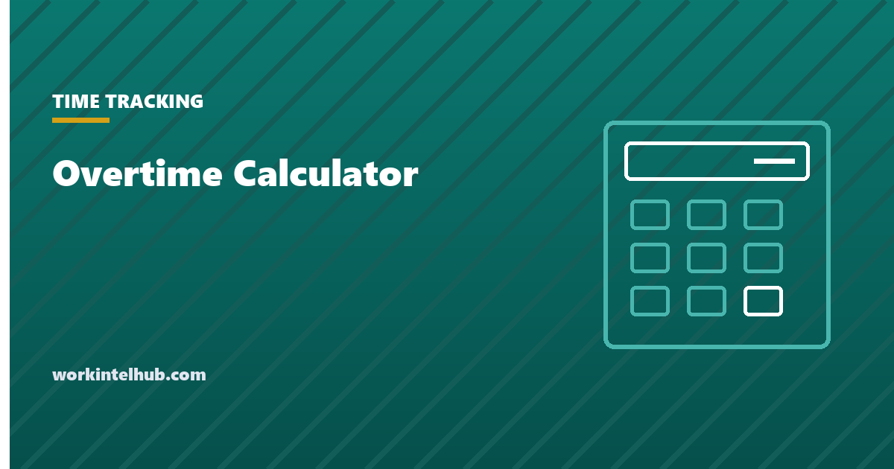

Overtime Calculator

Most overtime calculators multiply the base hourly wage by 1.5. That is the right answer only when base pay is the entire pay packet. The Fair Labor Standards Act requires overtime on the regular rate, which also includes nondiscretionary bonuses, shift differentials and commissions.
The calculator below does it the way the regulation does. Enter the extras if there were any, and it will show you the regular rate it derived and where the difference came from.
Overtime calculator
Federal weekly overtime only. If you work in a state with daily overtime, see the section below. Discretionary bonuses and paid leave are excluded from the regular rate, so leave them out.
The calculation runs in your browser. Nothing is sent anywhere, and nothing is stored.
Why the regular rate is not your hourly wage
29 CFR 778.109 is short and decisive: the regular hourly rate is total remuneration for the workweek, excluding the statutory exclusions, divided by the total hours actually worked in that week. It is a rate per hour that you derive, not a number on the employment contract.
29 U.S.C. 207(e) lists what comes out of that total. The exclusions are narrower than most people assume:
| Included in the regular rate | Excluded |
|---|---|
| Base wages | Gifts, and holiday payments not tied to hours or performance |
| Nondiscretionary bonuses | Discretionary bonuses, decided solely by the employer |
| Shift differentials | Paid leave: vacation, holiday, sick |
| Commissions | Reasonable travel expense reimbursement |
| Production and attendance bonuses | Employer contributions to retirement or insurance plans |
| On-call pay | Premium pay already at time and a half or more |
The line dividing the two bonus rows is the one that decides most cases. A bonus announced in advance for hitting a target is nondiscretionary, because the employee worked toward it expecting payment, and it goes into the regular rate. A genuine surprise, decided after the fact and not promised, is discretionary and stays out. Calling something discretionary in the handbook does not make it so if people were told they could earn it.
A worked example
Someone earns $22 an hour, works 46 hours, and receives a $150 production bonus for the week.
40 × $22 = $880
6 × $22 × 1.5 = $198
Total: $1,078
Straight time: 46 × $22 = $1,012
Plus bonus: $1,012 + $150 = $1,162 total remuneration
Regular rate: $1,162 ÷ 46 = $25.26 per hour
Overtime premium: 0.5 × $25.26 × 6 = $75.78
Total: $1,237.78
The gap is the bonus raising the rate on which overtime is owed. Note also the form of the second calculation: because straight time has already been paid on all 46 hours, only the half premium remains. That is the standard method for a week containing a bonus, and it produces the same answer as computing time and a half from scratch.
Where a lump sum bonus covers several weeks, it has to be apportioned across those weeks and the regular rate recalculated for each week that contained overtime. A quarterly bonus paid in one cheque does not sit in one week.
Overtime is weekly, and the workweek is yours to define
Overtime is calculated on each workweek separately. A workweek is a fixed, recurring period of 168 consecutive hours which the employer defines in advance. It does not have to start on Monday or align with the pay period.
Two consequences follow. Fifty hours in week one and thirty in week two is ten hours of overtime, not zero, even though the fortnight totals eighty. And the workweek cannot be moved around to avoid overtime once it is set: it is fixed and recurring precisely so that it cannot.
Our timesheet template has the biweekly layout with two separate weekly subtotals, which is the arrangement this rule requires.
The states where daily overtime applies
The calculator above applies the federal weekly rule. Several states add a daily threshold, and in those states a week under 40 hours can still owe overtime.
Per the California Division of Labor Standards Enforcement, California pays time and a half for hours beyond eight in a workday, up to and including twelve, and double time beyond twelve. On the seventh consecutive day of a workweek, the first eight hours are at time and a half and anything beyond that is at double time.
Four ten-hour days is forty hours for the week and eight hours of daily overtime. A weekly calculator reports nothing. Alaska, Nevada and Colorado have their own daily thresholds with their own conditions, so check the specific state rather than assuming they match California.
Regular: =MIN(8, daily_hours)
Time and a half: =MAX(0, MIN(daily_hours,12)-8)
Double time: =MAX(0, daily_hours-12)
Who is owed overtime at all
None of this applies to an exempt employee. Whether someone is exempt turns on three tests, all of which must be satisfied: paid on a salary basis, at or above $684 a week, and performing duties that fall within a recognised exemption.
A salaried employee can be non-exempt, which is the arrangement most often got wrong. Salary is a method of payment rather than an exemption, and a salaried non-exempt employee is owed overtime and needs hours recorded. Our definition of exempt vs non-exempt works through the three tests.
And where overtime is owed, it must be paid in money. Time off instead is compensatory time, which under the FLSA is available only to public agencies, as our entry on comp time explains.
Key takeaways
- Overtime is owed on the regular rate, not the base hourly wage.
- The regular rate is total remuneration for the week divided by hours actually worked, and you derive it rather than look it up.
- Nondiscretionary bonuses, shift differentials and commissions go into it. Discretionary bonuses, paid leave and expense reimbursement do not.
- A bonus announced in advance for hitting a target is nondiscretionary, whatever the handbook calls it.
- In a week containing a bonus, only the half premium remains, because straight time has already been paid on every hour.
- A lump sum covering several weeks must be apportioned, and the regular rate recalculated for each week with overtime.
- Overtime is per workweek. Fifty hours then thirty is ten hours of overtime, not zero.
- California, Alaska, Nevada and Colorado add daily thresholds a weekly calculator will miss entirely.
Frequently asked questions
How do you calculate overtime pay?
Divide total remuneration for the workweek by the hours actually worked to get the regular rate, then pay one and a half times that rate for hours beyond 40. Where straight time has already been paid on all hours, only the additional half premium remains for the overtime hours.
Is overtime calculated on my base hourly rate?
Not necessarily. The FLSA requires overtime on the regular rate, which includes nondiscretionary bonuses, shift differentials and commissions as well as base wages. If you received any of those in the same week, the regular rate is higher than your base wage and so is the overtime owed.
Which bonuses count toward overtime?
Nondiscretionary ones: bonuses announced in advance for hitting a target, production or attendance bonuses, and anything an employee worked toward expecting payment. Genuinely discretionary bonuses, decided after the fact and never promised, are excluded. Labelling a bonus discretionary does not make it so if people were told they could earn it.
What is the formula for time and a half?
Regular rate multiplied by 1.5, applied to hours beyond 40 in the workweek. The part people get wrong is the regular rate itself, which is total weekly pay divided by hours worked rather than the contracted hourly wage.
Can overtime be averaged across two weeks?
No. Overtime is calculated on each workweek separately, and a workweek is a fixed recurring period of 168 hours defined in advance. Fifty hours in one week and thirty in the next is ten hours of overtime even though the two-week total is eighty.
How is a quarterly bonus handled for overtime?
It has to be apportioned across the weeks it covers, and the regular rate recalculated for each of those weeks that contained overtime hours. A lump sum paid in one cheque does not belong to the single week in which it was paid.
Do I get overtime after 8 hours in a day?
Only in states with a daily threshold. California pays time and a half beyond eight hours in a workday and double time beyond twelve, with a separate rule for the seventh consecutive day. Alaska, Nevada and Colorado have their own daily rules. Under federal law alone, overtime begins after 40 hours in the week regardless of how they were distributed.
Can my employer give time off instead of overtime pay?
Not in the private sector. Compensatory time in place of overtime is permitted only to public agencies under the FLSA. A private employer must pay overtime in money on the regular payday, and an employee's agreement to take time off instead does not make the arrangement lawful.